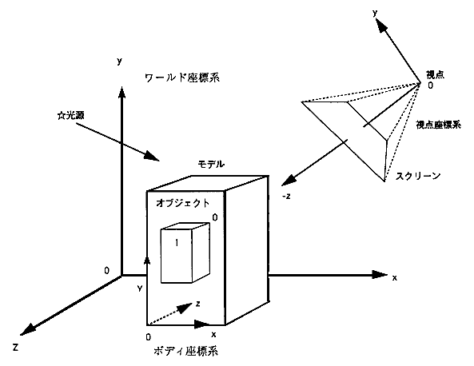
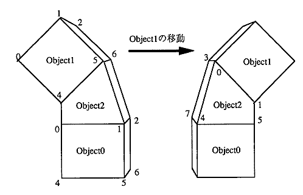

★PROGRAMMER'S GUIDE
★VDP1ライブラリ
★PROGRAMMER'S GUIDE
★VDP1ライブラリ

┏━━━━━━━┓ ┏━━━━━━━┓ ┃オブジェクト０┃ ┃オブジェクト１┃ ┗━━━━━━━┛ ┗━━━━━━━┛ ： ： ： ┌───────┐ ： ┌─┤クラスタ １０│ ： │ └───────┘ ： │ ┌───────┐ │ ┌───────┐ │クラスタ ００├─┼─┤クラスタ １１│ └───────┘ │ └───────┘ ┌───────┐ ルートクラスタ │ ┌─┤クラスタ ２０│ │ ┌───────┐ │ └───────┘ └─┤クラスタ １２├─┤ └───────┘ │ ┌───────┐ └─┤クラスタ ２１│ └───────┘
#include <machine.h>
#define _SPR3_ /* スプライト3D表示ライブラリの使用 */
#define SPR_3USE_DOUBLE_BUF /* ダブルバッファ指定 */
#include "sega_spr.h"
#include "sega_scl.h"
#include "sega_int.h"
SprCluster model0;
SprCluster model1;
#define COMMAND_MAX 1000 /* 最大コマンド数 */
#define GOUR_TBL_MAX 1000 /* 最大グーローテーブル数 */
#define LOOKUP_TBL_MAX 1000 /* 最大ルックアップテーブル数 */
#define CHAR_MAX 100 /* 最大キャラクタ数 */
#define DRAW_PRTY_MAX 256 /* 最大描画プライオリティブロック数 */
SPR_2DefineWork(work2d, COMMAND_MAX, GOUR_TBL_MAX,
LOOKUP_TBL_MAX, CHAR_MAX, DRAW_PRTY_MAX)
/* 2Dワークエリア定義 */
#define OBJ_SURF_MAX 16 /* オブジェクト内最大面数 */
#define OBJ_VERT_MAX 16 /* オブジェクト内最大頂点数 */
SPR_3DefineWork(work3d, OBJ_SURF_MAX, OBJ_VERT_MAX)
/* 3D表示ワークエリア定義 */
extern void vbStart(void); /* V-BLANK IN割り込みルーチン */
extern void vbEnd(void); /* V-BLANK OUT割り込みルーチン */
main()
{
set_imask(0); /* 割り込み可にします */
SCL_Vdp2Init(); /* スクロールとプライオリティの初期化 */
SCL_SetPriority(SCL_SP0|SCL_SP1|SCL_SP2|SCL_SP3|SCL_SP4|
SCL_SP5|SCL_SP6|SCL_SP7,7);
SCL_SetSpriteMode(SCL_TYPE1,SCL_MIX,SCL_SP_WINDOW);
SPR_2Initial(&work2d); /* 2Dスプライト表示初期化 */
SPR_3Initial(&work3d); /* 3Dスプライト表示初期化 */
INT_ChgMsk(INT_MSK_NULL, INT_MSK_VBL_IN | INT_MSK_VBL_OUT);
/* V-BLANK割り込みをディセーブル */
INT_SetFunc(INT_SCU_VBLK_IN, &vbStart);
/* V-BLANK IN割り込みルーチンの登録 */
INT_SetFunc(INT_SCU_VBLK_OUT, &vbEnd);
/* V-BLANK OUT割り込みルーチンの登録 */
INT_ChgMsk( INT_MSK_VBL_IN | INT_MSK_VBL_OUT, INT_MSK_NULL);
/* V-BLANK割り込みをイネーブル */
SPR_2FrameChgIntr(0xffff); /* フレームチェンジインターバルを不定 */
/* モードにセット */
SPR_3SetTexture(texture); /* 3D用テクスチャデータのセット */
for(;;) {
--------------- /* スクロールデータセット */
SPR_3SetLight(...); /* 3D光源のセット */
SPR_3SetView(...); /* 3D視点のセット */
SPR_2OpenCommand(SPR_2DRAW_PRTY_ON);
/* スプライトコマンド書き込みのオープン*/
SPR_2SysClip(SPR_2MOST_FAR,&xy);
/* システムクリップエリアコマンド */
SPR_2LocalCoord(SPR_2MOST_FAR,&xy);
/* ローカル座標コマンド */
SPR_3moveCluster(model0,...);/* 3Dモデル0のルートクラスタを移動 */
SPR_3DrawModel(model0,...); /* 3Dモデル0の登録 */
SPR_3moveCluster(model1,...);/* 3Dモデル1のルートクラスタを移動 */
SPR_3DrawModel(model1,...); /* 3Dモデル1の登録 */
.
.
.
SPR_3Flush(); /* 3Dスプライトコマンドセット */
SPR_2CloseCommand(); /* スプライトコマンド書き込みのクローズ*/
SCL_DisplayFrame(); /* V-BLANK割り込みを待ち、 */
/* スプライト表示とスクロール動作を行う*/
}
}
−Vブランク処理ルーチン(上記メインとは別ソースファイル)−
#include <machine.h>
#include "sega_spr.h"
#include "sega_scl.h"
#pragma interrupt(VbStart)
#pragma interrupt(VbEnd)
void VbStart(void)
{
SCL_VblankStart(); /* Vブランク開始VDP割り込み処理 */
-------- /* その他Vブランク開始処理 */
}
void VbEnd(void)
{
SCL_VblankEnd(); /* Vブランク終了VDP割り込み処理 */
-------- /* その他Vブランク終了処理 */
}

Ｃｈｉｌｄ ┌──────────────────┐ ┌──────────────────┐ │ Ｃｌｕｓｔｅｒ０ │→│ Ｃｌｕｓｔｅｒ１ │ └──────────────────┘ └──────────────────┘ ： ： ： ： ↓ ↓ ↓ ↓ ┌─────────┐┌───────┐ ┌─────────┐┌───────┐ │ＩｎｂｅｔＩｎｆ０││Ｏｂｊｅｃｔ０│ │ＩｎｂｅｔＩｎｆ１││Ｏｂｊｅｃｔ１│ └─────────┘└───────┘ └─────────┘└───────┘ ： ↓ ┌───────┐ │Ｏｂｊｅｃｔ２│ └───────┘
★PROGRAMMER'S GUIDE
★VDP1ライブラリ